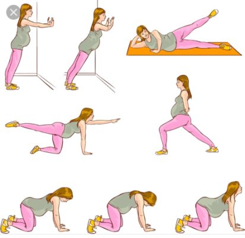
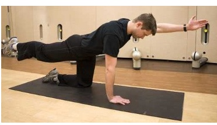

Los ejercicios clave para una espalda alta más grande | GQ
2021.12.08 10:40
Skip to main content Edition México Australia Brasil Britain China España France Germany India Italia Japan Korea Middle East Portugal South Africa Taiwan Thailand Türkiye United States Россия Buscar Suscripción Open Navigation Menu Moda Estilo de Vida Entretenimiento Cuidado Personal Watches Videos GQ Sports Close Navigation Menu Buscar Suscripción Newsletter Moda Estilo de Vida Entretenimiento Cuidado Personal Watches Videos GQ Sports
Síguenos
Cuidado PersonalLos ejercicios clave para una espalda alta con más músculo
¿Quieres una espalda más tonificada? Te dejamos los ejercicios básicos para trabajar la espalda alta.Por Alonso Martínez
2 de septiembre de 2021 Pesas Jordan Beal / EyeEmLos ejercicios para espalda alta son particularmente importantes cuando buscamos una figura más definida y mucho más marcada, sin enfocarnos completamente en el centro o en el pecho. La espalda alta puede crear bastante músculo junto con los hombros, dando un aspecto mucho más amplio y musculoso en general.
Si ya revisaste nuestros ejercicios para trabajar hombros y quieres enfocarte más en la espalda te dejamos los ejercicios clave para esa parte del cuerpo.
Row de barra inclinado
Siempre que busquemos trabajar la espalda, estos ejercicios inclinados con mancuernas o barras, nos ayudarán a enfocarnos en esa zona, principalmente en la parte de arriba y los hombros. El row de barra inclinado consiste en tomar una barra con los brazos separados a la altura de los hombros mientras adoptamos una posición de espalda inclinada, con las rodillas ligeramente inclinadas y la espalda recta en ángulo diagonal, sin crear una curva. Comenzamos con la barra pegada al abdomen y codos atrás, y bajamos la barra haciendo fuerza en los brazos y hombros, volvemos a llevarla hacia arriba y repetimos.
Row de foca
Con este ejercicio realmente estamos haciendo que la espalda y los brazos hagan todo el ejercicio . Nos recostamos boca abajo en una banca de ejercicio con una barra colocada justo abajo. La tomamos y la levantamos hasta que los codos queden a la altura de la espalda, bajamos la barra sin que toque el piso usando la espalda como apoyo, volvemos a levantar lentamente y repetimos.
Pull de cara
Para este ejercicio necesitas una máquina de cuerda. Se sostiene la cuerda con un grip con las palmas hacia abajo, caminamos hacia atrás hasta que los brazos se estén estirando, y tomamos una postura sólida, activando el centro y los glúteos con los hombros abajo y el pecho arriba. Jalamos la cuerda hacia nosotros a la altura del rostro, elevando así los brazos, realmente enfocándonos en los hombros y en la espalda alta.
Busca la figura ideal.
Paul Aiken / EyeEmShrugs
El shrug es un ejercicio que ayuda a construir hombros más amplios y a la vez una espalda alta más tonificada. Comenzamos tomando una barra con los brazos ligeramente abiertos y la mantenemos a la altura de los muslos, como si hiciéramos peso muerto. En esa posición, nos encargamos de usar los hombros para tratar de levantar la barra. Sentirás el impacto en los hombros y hasta los omóplatos. Sostienes unos cuántos segundos antes de volver a bajar.
Row de un solo brazo
Con una mancuerna en la mano derecha, nos apoyamos en un banco de ejercicio con la rodilla y la palma de la mano izquierda, con la otra pierna en un ángulo que nos mantenga balanceados. Comenzamos con la mancuerna pegada al abdomen lateral y el codo inclinado hacia atrás, y bajamos lentamente hasta tener el brazo casi estirado y volvemos a subir, sintiendo el impacto en la parte superior de la espalda. Cambiamos de lado para trabajar el brazo izquierdo.
Pull-up
Un ejercicio básico para espalda y hombros. En una barra alta, sostenemos con los brazos ligeramente abiertos, y usando los brazos y espalda tratamos de levantar el cuerpo hasta que la cabeza quede por encima de la barra. Sostenemos un poco antes de bajar. Lo ideal es tratar de no tocar el piso durante algunas repeticiones para tener un mayor impacto.
Rows de renegado
Como puedes ver, los ejercicios de rows siempre son recomendados para trabajar espalda y hombros. Las de renegado son una mezcla de los que hemos visto y una plancha. Con una mancuerna en cada mano, adoptamos una posición de plancha alta, apoyándonos con las mancuernas en el suelo y las puntas de los pies, tratando de crear una línea recta desde la cabeza hasta los pies. Alzamos el brazo derecho hasta que la mancuerna toque el estómago y el codo quede hacia atrás, y hacemos una row, bajando lentamente y volviendo a subir. Repetimos o cambiamos de lado.
Etiquetas Rutinas de ejercicio GQ México y LatinoaméricaMás
Moda Estilo de Vida Entretenimiento Cuidado Personal Watches Videos GQ SportsCondé Nast México
AD Glamour Vogue GQ Términos y Condiciones Convenio del Usuario Aviso de Privacidad Quiénes Somos Media Kit Newsletter Suscripción Gestionar cookies© 2021 Condé Nast
Select international site México Australia Brasil Britain China España France Germany India Italia Japan Korea Middle East Portugal South Africa Taiwan Thailand Türkiye United States Россия- Los mejores ejercicios para fortalecer la espalda y corregir la .
- Ejercicios de espalda en casa - Mundo Deportivo
- Los 15 mejores ejercicios para una espalda y dorsales en V
- Ejercicios para fortalecer la espalda sin hacernos daño
- 5 ejercicios básicos para lograr una espalda descomunal - AS .
- Los mejores ejercicios para acabar con el dolor de espalda
- 6 ejercicios con el propio peso para una espalda fuerte
- Los 11 mejores ejercicios para entrenar tu espalda en el .
- Guía de ejercicios para la parte baja de la espalda (Back .
- Ejercicios para la espalda en 15 minutos diarios - Mayo Clinic
- Los mejores ejercicios para fortalecer la espalda y corregir la .
en casa · Pues bien, este ejercicio de las dominadas deslizantes es uno de los más reputados a la hora de fortalecer y . - Ejercicios de espalda en casa - Mundo Deportivo
- Los 15 mejores ejercicios para una espalda y dorsales en V
- Ejercicios para fortalecer la espalda sin hacernos daño
- 5 ejercicios básicos para lograr una espalda descomunal - AS .
- Los mejores ejercicios para acabar con el dolor de espalda
- 6 ejercicios con el propio peso para una espalda fuerte
- Los 11 mejores ejercicios para entrenar tu espalda en el .
- Guía de ejercicios para la parte baja de la espalda (Back .
- Ejercicios para la espalda en 15 minutos diarios - Mayo Clinic
en casa · Pues bien, este ejercicio de las dominadas deslizantes es uno de los más reputados a la hora de fortalecer y .
 